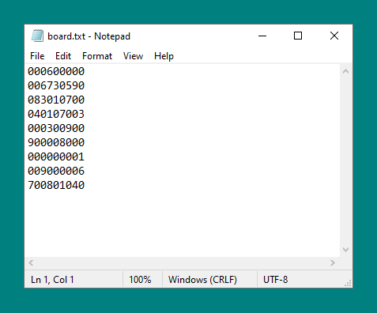

Sudoku Solver
Python program to visualise a backtracking algorithm solving a Sudoku puzzle.

Contents
The Problem
In order to solve a Sudoku puzzle you must enter a number between 1 and 9 in every cell on a grid, such that each row and each column has no repeating digits, as well as having no repeating digits in each of the 9 3x3 blocks.
A typical Sudoku puzzle will be a 9x9 grid, with some of the numbers already filled in. The number of digits that are given determines the diffculty of said puzzle.
The Solution
Backtracking algorithm
My solution uses a backtracking algorithm to solve the puzzle. This is a type of brute force algorithm and works by filling each digit one by one, and then removing them if / when we discover that digit cannot lead to a solution.
Animation
In addition to solving the puzzle, my solution also animates the process using PyGame, allowing the user to see the algorithm at work.
User Input
The program will prompt the user to input (y/n) whether or not the program should animate the process. And will then ask for an input between 0 and 1 to determine the animation speed. This number is simply the interval time in seconds and therefore I recommend < 0.01.
The program also reads the starting setup from a .txt file that is written in the following format.
Demonstration
See video below for demonstration of program.